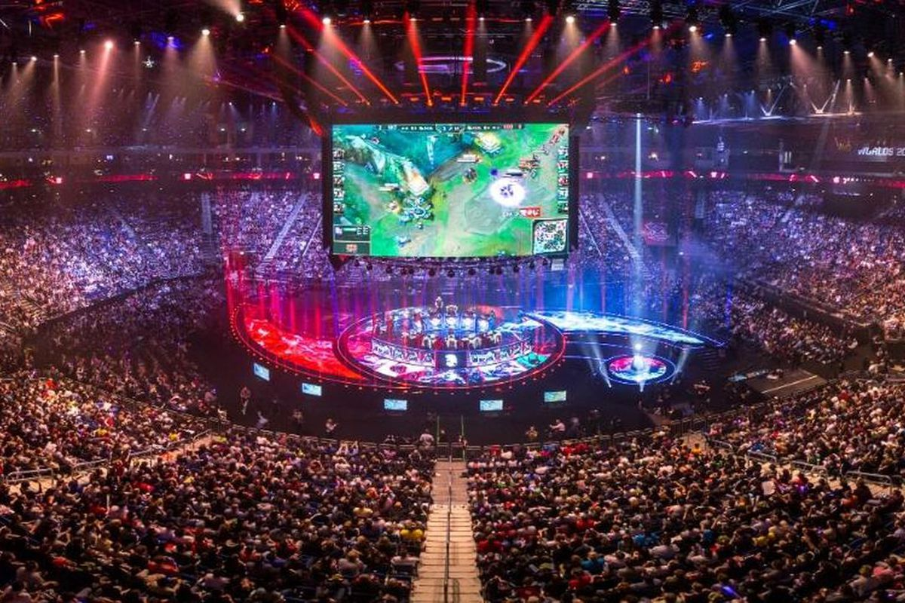

League of Legends est un jeu en ligne qui se joue en équipe de 5 contre 5. Le but du jeu est de détruire le bâtiment principal adverse, le Nexus, protégé par des tourelles. Pour cela, il faut coopérer avec ses alliés afin de conquérir les objectifs majeurs de la carte de jeu et surpasser ses adversaires.
Chaque joueur incarne un personnage choisi parmi une sélection de plus de 100 champions aux caractéristiques diverses et variées : certains sont des "tanks", faits pour encaisser les dégâts ; d'autres sont conçus pour faire beaucoup de dégâts etc...
La carte de jeu, nommée Faille de l'Invocateur, est composée de trois voies avec entre ces voies ce qu'on appelle la jungle,
où se trouvent des monstres que les "junglers" peuvent tuer pour gagner de l'or et de l'expérience.
Pour les "laners", le but est de tuer les sbires adverses, qui apparaissent par vagues, pour amasser de l'or et ainsi acheter de l'équipement pour terrasser son adversaire.
Une équipe "classique" est composée d'un toplaner pouvant encaisser des dégâts et en infliger modérément, un jungler qui peut facilement intervenir sur d'autres voies, avec de bonnes capacités de déplacement, un champion
de type mage ou assassin sur la voie du milieu et un tireur à distance accompagné par un support sur la voie du bas. Le tireur étant relativement fragile, le support l'aide à devenir plus fort tout en le protégeant ou en le soignant.
La carte de jeu
Dès la bêta du jeu il y a 10 ans, il est pensé pour corriger un défaut majeur de son ancêtre, dotA : une vraie scène compétitive. Ainsi, Riot Games a très vite lancé un système de saisons compétitives. Les deux premières saisons étaient constitutées de LAN avec un championnat du monde à la fin. À partir de la saison 3, Riot met en place un système compétitif par région : les meilleures équipes de chaque région sont rassemblées dans une ligue continentale (Europe, Amérique du Nord, Chine, Corée du Sud, Vietnam) et prennent part à un championnat similaire à un championnat de football, où chaque équipe rencontre chaque équipe deux fois.
À l'issue de ce "split" régulier ont lieu des play-offs avec matchs à élimination directe avec quarts, demi-finales et finale, afin de sacrer une équipe championne. Les meilleurs équipes de chaque ligue sont ensuite conviées au championnat du monde.
À l'aube de la saison 10, le bilan des championnats du monde est plus que positif, malgré deux premiers championnats poussifs avec d'importants problèmes de connexion. Les régions ayant réussi à remporter le titre mondial sont l'Europe (Fnatic) à l'époque de la saison 1 (le jeu n'était pas encore jouable en Corée), la LMS (Taipei Assassins), puis longtemps la Corée (saison 3 à 7, deux titres pour SKT T1 et deux titres pour Samsung Galaxy) puis la Chine (saison 8 et 9 avec respectivement Invictus Gaming et FunPlus Phoenix)
La finale 2019 à l'AccorHotels Arena de Paris.